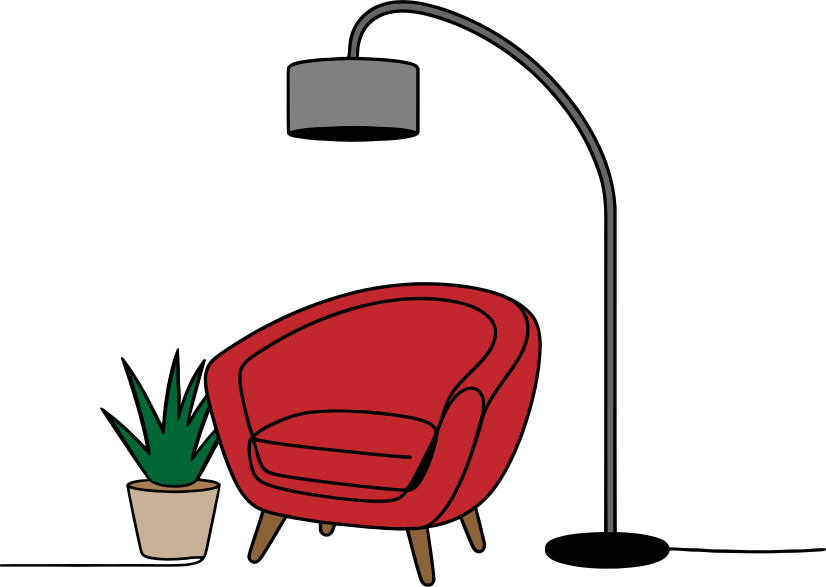

Welcome to Your Book Journal
This is a place to add books to your personal shelf, track your reading progress, and capture your thoughts chapter by chapter. Your space to save meaningful quotes, rate your favorite moments, and build a reading archive that
grows with you.